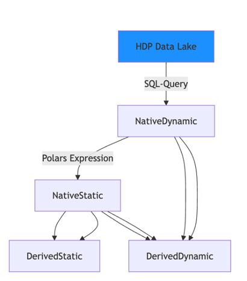

Core Module#
The core module contains the fundamental classes for managing cohorts and variables in CORR-Vars.
Variable Architecture#
Variables in CORR-Vars follow a hierarchical structure that supports different types of data extraction and computation:
{kind=link}

Variable Types#
- Base Variable Class
The foundational class that all variables inherit from. Provides common functionality for data processing, cleaning, and time filtering. Source-specific subclasses (e.g.
Variableinsources/reprodicu) add source-specific extraction and optimizations.corr_vars.core.variableis a package:Variablelives inbaseand the source-agnostic outcome typeFreeDaysVariableinfree_days; both are re-exported from the package.- Free-Day Outcome Variable
FreeDaysVariable("type": "free_days") computes “free-days-through-day-N” outcomes (ventilator-, RRT-, vasopressor-free days, …) source-agnostically, delegating to thefree_days()engine. See Free-Day Outcomes.
Variable Processing Pipeline#
Each variable follows a standardized processing pipeline:
Extraction: Data is retrieved from the specified source
Time Filtering: Data is filtered based on tmin/tmax constraints
Cleaning: Invalid values are removed based on cleaning rules
Column Ordering: Columns are standardized according to predefined order
Relative Time Calculation: Relative timestamps are computed for dynamic variables
Examples#
Working with Variables#
from corr_vars.core.variable import Variable
from corr_vars import Cohort
# Initialize a cohort
cohort = Cohort(obs_level="icu_stay", load_default_vars=False)
# Variables are typically added through the cohort interface
cohort.add_variable("blood_sodium")
# Access the variable data
sodium_data = cohort.obsm["blood_sodium"]
print(f"Sodium measurements: {len(sodium_data)} records")
Custom Variable Creation#
from corr_vars.sources.local_datasource import NativeStatic
# Aggregate an existing dynamic variable into one value per observation.
# The variable classes are source-agnostic: base_var resolves through
# whichever sources the cohort is configured with.
cohort.add_variable(NativeStatic(
var_name="max_temperature_24h",
select="!max value",
base_var="body_temperature",
tmin="icu_admission",
tmax=("icu_admission", "+24h"),
))
Declarative form
The same variable can be written as a definition dict, which is the shape used in a
source’s vars.json and in the Concepts API:
cohort.add_variable_definition("max_temperature_24h", {
"type": "native_static",
"select": "!max value",
"base_var": "body_temperature",
})
cohort.add_variable(
"max_temperature_24h",
tmin="icu_admission",
tmax=("icu_admission", "+24h"),
)
This only works if one of the cohort’s sources has a variable loader that understands
the aggregation type — local_datasource or a deployment source built on it. A
reprodicu-only cohort does not, so use direct construction there. See
Aggregated Variables.
Time Constraints#
# Add variable with custom time constraints
cohort.add_variable(
"blood_lactate",
tmin=("icu_admission", "-2h"), # 2 hours before ICU admission
tmax=("icu_admission", "+6h") # 6 hours after ICU admission
)
Class Reference#
- class corr_vars.core.variable.Variable(var_name, dynamic, tmin, tmax, requires=[], py=None, py_ready_polars=False, cleaning=None)[source]#
Bases:
objectBase class for all variables.
- Parameters:
var_name (str) – The variable name.
dynamic (bool) – True if the variable is dynamic (time-series).
requires (RequirementsIterable) – List of variables or dict of variables with tmin/tmax required to calculate the variable (default: []).
tmin (TimeAnchorColumn | None) – The tmin argument. Can either be a string (column name) or a tuple of (column name, timedelta).
tmax (TimeAnchorColumn | None) – The tmax argument. Can either be a string (column name) or a tuple of (column name, timedelta).
py (Callable) – The function to call to calculate the variable.
py_ready_polars (bool) – True if the variable code can accept polars dataframes as input and return a polars dataframe.
cleaning (CleaningDict) – Dictionary with cleaning rules for the variable.
- contributor_key#
Identity of this variable within its
MultiSourceVariable. Defaults to var_name and is overwritten with the contributor key when the variable is one of several sharing a name, such as the members of a concept group.- Type:
str
Note
tmin and tmax can be None when you create a Variable object, but must be set before extraction. If you add the variable via cohort.add_variable(), it will be automatically set to the cohort’s tmin and tmax.
This base class should not be used directly; use one of the subclasses instead. These are specified in the sources submodule.
Examples
Basic cleaning configuration:
>>> cleaning = {"value": {"low": 10, "high": 80}}
Time constraints with relative offsets:
>>> # Extract data from 2 hours before to 6 hours after ICU admission >>> tmin = ("icu_admission", "-2h") >>> tmax = ("icu_admission", "+6h")
Variable with dependencies:
>>> # This variable requires other variables to be loaded first >>> requires = ["blood_pressure_sys", "blood_pressure_dia"]
>>> # This variable requires other variables with fixed tmin/tmax to be loaded first >>> requires = { ... "blood_pressure_sys_hospital": { ... "template": "blood_pressure_sys" ... "tmin": "hospital_admission", ... "tmax": "hospital_discharge" ... }, ... "blood_pressure_dia_hospital": { ... "template": "blood_pressure_dia" ... "tmin": "hospital_admission", ... "tmax": "hospital_discharge" ... } ... }
- var_name: str#
- dynamic: bool#
- time_window: TimeWindow#
- requirements: Mapping[str, RequirementsDict]#
- required_vars: dict[str, ExtractedVariable]#
- py: VariableCallable | None#
- py_ready_polars: bool#
- cleaning: dict[str, dict[Literal['low', 'high'], Any]] | None#
- data: DataFrame | None#
- property guessed_source: str | None#
- classmethod from_time_window(time_window, *args, **kwargs)[source]#
- Parameters:
time_window (
TimeWindow)- Return type:
- extract(cohort)[source]#
Extracts data from the datasource. Usually follows this pattern.
# Load & Extract required variables self._get_required_vars(cohort) # This should change self.data either by returning or side effect self.data = self._custom_extraction(cohort) # Calls variable function to transform extracted data self._call_var_function(cohort) if self.dynamic: self._add_time_window(cohort) # Expects case_tmin, case_tmax for each primary key self._timefilter() self._apply_cleaning()
- Parameters:
cohort (
Cohort)- Return type:
DataFrame
- class corr_vars.core.variable.FreeDaysVariable(var_name, requires=[], *, method='last_event', death_rule='zero_if_dead', recovery_threshold=None, merge_gap=None, death_col=None, censor_col=None, with_detail=False, tmin=None, tmax=None, dynamic=False, **_ignored)[source]#
Bases:
VariableA source-agnostic “free-days-through-day-N” outcome.
Counts the days in a follow-up horizon that are free of some clinical event — ventilator-free days, RRT-free days, vasopressor-free days, and so on. The horizon is the variable’s time window:
tminis time zero (T0) andtmaxisT0 + horizon, so the usualadd_variable(..., tmin=..., tmax=...)machinery selects the horizon (e.g.tmax=("icu_admission", "+28d")for a 28-day window).The variable declares exactly one dependency — the event’s episode intervals — and delegates all counting to
corr_vars.utils.outcomes.free_days(), so the same definition holds across every data source.- Parameters:
var_name (
str) – Name of the produced outcome column.requires (
list[str] |dict[str,RequirementsDict]) –The episode source (e.g.
invasive_vent), aliasedepisodes, plus an optional second requirement aliasedpresencecarrying observation-window intervals (e.g.hospital_stays). Declare them in dict form so they inherit the horizon and are screened across the patient’s cases:"requires": {"episodes": {"template": "invasive_vent", "tmin": "inherit", "tmax": "inherit", "screened_obs_level": "patient"}}
When
presenceis supplied, a day counts as free only if it is also observed (inside a presence interval), so an unobserved discharge → readmission gap is not miscredited as free; omit it to keep the standard convention.method (
Literal['last_event','day_grid']) –"last_event"(free tail after the last episode) or"day_grid"(per-day union; gaps restore free days).death_rule (
Literal['zero_if_dead','alive_days','negative_if_death']) –"zero_if_dead"or"alive_days".recovery_threshold (
str|timedelta|None) –day_gridonly — keep days non-free until this long after the last episode ends (e.g."7d"for RRT).merge_gap (
str|timedelta|None) – Merge episodes separated by at most this long into one before counting (e.g."48h"so a reintubation within 48h does not count as ventilator-free).death_col (
str|Expr|None) – Column name or expression overcohort.obsgiving the death timestamp.None(source-agnostic default) or a name absent from obs disables the death rule.censor_col (
str|Expr|None) – Column name or expression overcohort.obsgiving the last observable time; when it precedes the horizon end the outcome is null.Noneor a name absent from obs disables censoring.with_detail (
bool) – Also save a{save_as}_detailstruct with the competing-risk components (event_time_days,event_type,died_in_horizon,censored) that the VFD literature recommends reporting alongside the composite.tmin (
str|tuple[str,str] |TimeAnchor|None)tmax (
str|tuple[str,str] |TimeAnchor|None)dynamic (
bool)_ignored (
Any)
- extract(cohort)[source]#
Extracts data from the datasource. Usually follows this pattern.
# Load & Extract required variables self._get_required_vars(cohort) # This should change self.data either by returning or side effect self.data = self._custom_extraction(cohort) # Calls variable function to transform extracted data self._call_var_function(cohort) if self.dynamic: self._add_time_window(cohort) # Expects case_tmin, case_tmax for each primary key self._timefilter() self._apply_cleaning()
- Parameters:
cohort (
Cohort)- Return type:
DataFrame